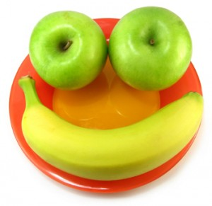
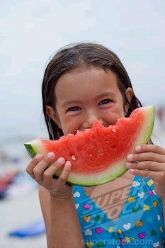

Hi and welcome back to the Take Action Program!
We hope you are learning to look for good things and calm things around you
and to never give up trying to do this because it will help you keep happy and calm.
This week, we want you to keep practising using your options of
looking for good things and looking for calm things, and never giving up trying to do this.
Remember that practising helps us to learn new things, so it is important to keep doing
the Take Action Program this week. Plus, there are some new games you can play
during the Program as well.
So remember, LOOK FOR GOOD, LOOK FOR CALM, and NEVER GIVE UP!!
Click on the arrow to get started and see you next time!
|  |  |